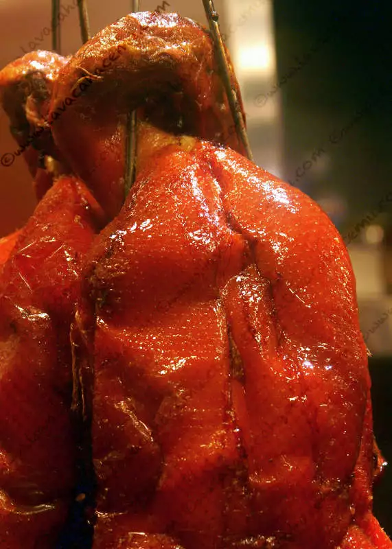

2007-02-05

No es necesario tener un servicio de mesa, un mantel o las servilletas de tela para que una comida sea una experiencia culinaria memorable. Lo que esta en la foto es un pato preparado a lo que nosotros occidentales llamamos BBQ, o simplemente rojo para los bajacalifornianos en particular. Bien, este paro no fue realmente el causante de la memoria olfativa y visual de la cual hablo, mas bien fueron unas costillitas de puerco preparadas de la misma manera sumadas a una buena copa de gewürztraminer.
Después de (des)esperar la llegada de unoo de los vagones en SF, decidimos mejor caminar al hotel y de pasada cerca del barrio chino nos topamos con un local que tenía estos patos y pedazos de puerco colgados en la ventana y decidimos comprar un par de libras para merendar mientras se hacía la hora de la cena. Sin duda ha sido una de las comidas que dificilmente se podrán reproducir pero que definitivamente habrá que intentar :) , es momento digno de alabanza sin importar que venga una caja de unicel y no tengas cubiertos a la mano.
{kind=link}